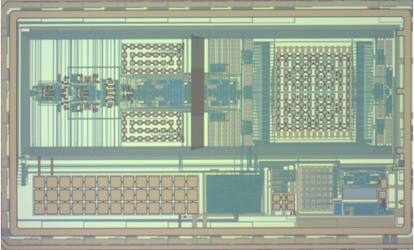
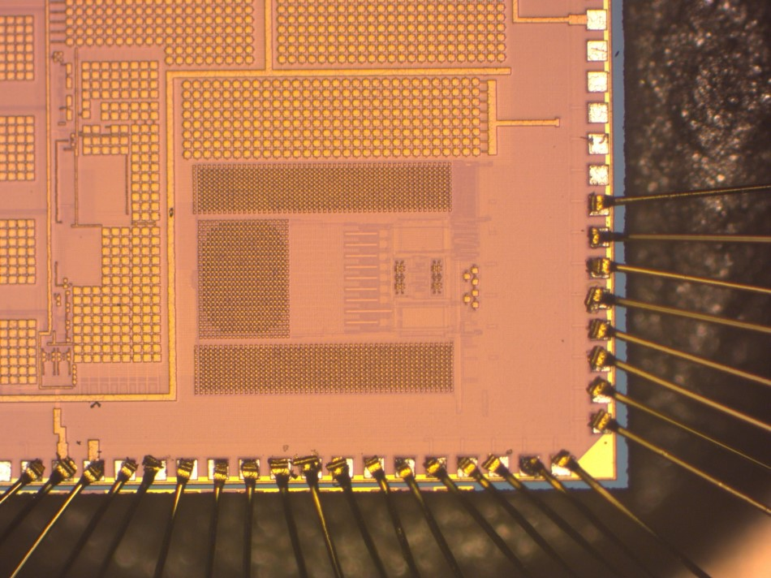
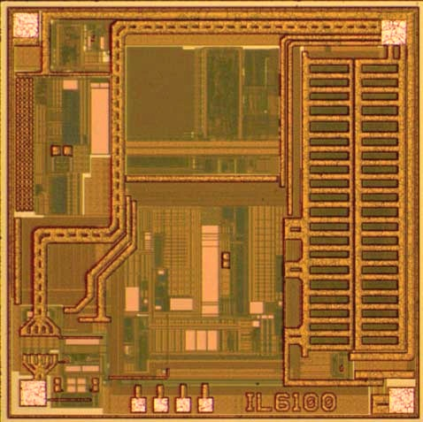

Current Research Areas
Low Power Circuits (Sensor Interface, Analog/Mixed-signal Integrated Circuits)
Advanced fabrication technologies and emerging systems like quantum computer, sensing networks, etc. have new requirements on the circuits in terms of power consumption, operating environment, and precision. We are exploring novel circuit design techniques to maintain the ASICs' performance under extreme conditions like high/low temperature, strong EM irradiation, etc.
Passive Sensing Platform for the Internet of Things (IoT)
To enable the vision of IoT and AI-powered future world, the front-end devices, sensors, are of utmost importance to collect and feed data into the AI engine to perform analysis and control. Given the number and diversity of the target sensing spots, the sensor node should be low-cost and maintenance-free. We are working on new passive sensing platforms integrating power, sensor, communication, as well as coarse data process on a single substrate.
Heterogeneous Sensors (Chemical, Biomolecular, MEMS) for Biomedical Applications
To develop enabling technologies and miniaturized devices which bring benefits to people that are not accessible to regular medical screening, various sensors are required to capture different bio-signals. Our group is exploring the interface and integration techniques to design heterogeneous biomedical sensing systems. We are also trying to embed intelligence in the sensors with near-sensor signal processing for performance enhancement.
Chip and System Gallery
|  |
|
BJT-based Temperature Sensor
This design proposed a subranging BJT-based temperature sensor optimized for an ultra-wide sensing range operation from -50 to 180 oC. It achieves low-power (micro-watt) operation and high energy efficiency at high temperatures. We presented and demonstrated this design in ISSCC 2022.
|
|  |
|
Lower-power Instrumentation Amplifier
This design proposed a power-up calibration scheme to mitigate the offset of a capacitive-gain chopper instrumentation amplifier (CCIA), thus suppressing the offset-induced output ripple.
|
|  |
|
UHF RFID Sensor Tag
This design is an ultra high frequency (UHF) passive sense tag targeting for electrical grid and substation thermal monitoring, with emphasis on the design of an ultra-low power embedded temperature sensor as well as the tag system optimization to extend the tag operating range. The designed tag achieves a -12.3 dBm sensitivity under active temperature monitoring operation, which is state of the art among existing UHF passive temperature sense tag products. By using a low-cost wireless single-point trimming, the embedded temperature sensor achieves an inaccuracy of +/-2.5 oC (3σ) from -25 to 120 oC.
|
Research Grants
- Lead Principal Investigator (LPI) (Collaborator: Man-Kay Law), “Multi-Mode 2D/3D Image Sensor Chip for Next-Generation Intelligent Machine Vision,” Qatar Research Development and Innovation Council (QRDI), ARG02-0421-240247, 2025-2028 [USD 710,135].
- Principal Investigator (PI) (Collaborator: Amine Bermak, Yunhui Liu, Samir Brahim Belhaouari, Abdelkrim Khelif), “Light and Sound for Improved Artificial Vision,” Qatar Research Development and Innovation Council (QRDI), ARG01-0522-230274, 2024-2027 [USD 728,192].
- Lead Principal Investigator (LPI), “A Homecare Blood Flowmetry Device for Patient with Peripheral Arterial Disease – Towards Field Application,” HBKU Innovation Fund - 5th Cycle, 2022-2023 [QAR 50,000].
- Lead Principal Investigator (LPI) and Research Mentor (Primary Research Mentor: Spiridon Bakiras), “Design and Implementation of Certificateless Cryptography for IoT Applications,” Graduate Sponsorship Research Award (GSRA), GSRA8-L-2-0430-21021, 2021-2023 [USD 122,000].
- Lead Principal Investigator (LPI) (Other collaborators: Spiridon Bakiras, Berk Sunar), “Endpoint Secured Multi-sensor Interface Chip for IoT Applications,” National Priorities Research Program (NPRP), NPRP13S-0122-200135, 2021-2024 [USD 500,040].
- Lead Principal Investigator (LPI) (Collaborator: Kabir Hassan Biswas), “A Miniaturized High-Dynamic Range Bioluminescence and Fluorescence Biosensing System for Biomedical Applications,” HBKU Thematic Grant - 1st Cycle, 2021–2023 [QAR 432,122].
- Principal Investigator (PI) (Collaborator: Hicham Hamoudi), “3D Printing Based on Self-assembled Molecular Building Blocks for Materials Design and Bio-applications,” HBKU Thematic Grant - 1st Cycle, 2021–2023 [QAR 400,000].
- Lead Principal Investigator (LPI), “A Blood Flowmetry Homecare Device for Diabetes Patients,” HBKU Innovation Fund – 2nd Cycle, 2020-2021 [QAR 50,000].
- Lead Principal Investigator (LPI) (Other collaborators: Mohamed Abdallah, Edgar Sanchez-Sinencio, Patrick Mercier), “Electric Grid Failures–Don’t Wait Until They Happen,” National Priorities Research Program (NPRP), NPRP11S-0104-180192, 2019-2022 [USD 599,700].
- Principal Investigator (PI) (Collaborator: Amine Bermak, Chi Ying Tsui, Jinho Bae), “Low-cost Wearable Self-Powered Wireless Sensors Network for real-time human activity and health monitoring,” National Priorities Research Program (NPRP), NPRP11S-0110-180246, 2019-2022 [USD 400,000].
- Lead Principal Investigator (LPI) (Collaborator: David Yin Yang), “Line-Tracking Smart Car with Edge-based Path Recognition and Dual-PID Control Strategy,” Undergraduate Research Experience Program (UREP), UREP21-136-2-055, 2018-2019 [USD 25,000].
- Principal Investigator (PI), “Smart Wearable Sensing Platform with Wireless Communication and Embedded Processing for Health Monitoring Applications,” Undergraduate Research Experience Program (UREP), UREP19-220-2-069, 2017-2018 [USD 20,000].
Lab Resources
R&S HMP4040 Power Supply
R&S®FSW8 Spectrum Analyzer
Keysight 33600A Waveform Generator
Keysight E4990A Impedance Analyzer
Keysight N5181B MXG RF Analog Signal Generator
Keysight B2902A Precision Source/Measure Unit
Keysight E4980A LCR Meter
Keysight 35670A FFT Dynamic Signal Analyzer
Tektronix MSO5204B Mixed Signal Oscilloscope
Tektronix TLA6400 Logic Analyzer
Fluke 8508A Reference Multimeter
Others: Bonding machine, PCB maker, 3D printer, optical bentch, inkjet printer, SEM, advanced rework station, etc.
Back to top»